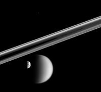
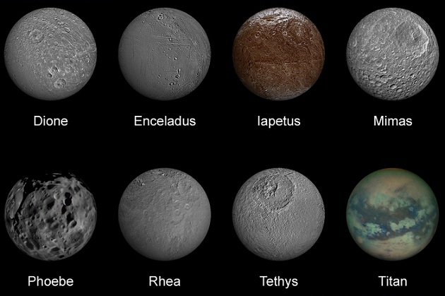

Saturn's Moons

Huge Titan, Dione, Prometheus, and Telesto
Four moons of Saturn can be seen on this image by the Cassini spacecraft: Huge Titan and Dione at the bottom, small Prometheus (under the rings) and tiny Telesto above center.
- Huge Titan
- 5 150 km
- Dione
- 1 123 km
- Prometheus
- 10 759 km
- Talesto
- 969 km
Rhea, Mimas, Enceladus, Pandora, and Janus
Five moons in another Cassini image: Rhea bisected in the foreground, Mimas behind it, bright Enceladus above and beyond the rings, Pandora eclipsed by the F Ring.
- Rhea
- 325 783 km
- Mimas
- 572 956 km
- Enceladus
- 10 759 km
- Pandora
- 9.69 km
- Janus
- 6 789 km
Discovery of Saturn's Moons

Christiaan Huygens discovered the first known moon of Saturn. The year was 1655 and the moon was Titan. Giovanni Domenico Cassini made the next four discoveries: Iapetus (1671), Rhea (1672), Dione (1684), and Tethys (1684). Mimas and Enceladus were both discovered by William Herschel in 1789.
As telescopic resolving power increased through the 19th century, Saturn's family of known moons grew.